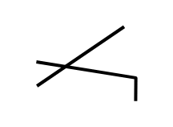

.jpg)
Giresun, mavinin ve yeşilin sadece yan yana değil, iç içe geçtiği; köklü tarihi ve mert insanıyla Karadeniz’in en özgün şehirlerinden biridir. 2026 yılı tahmini verilerine göre yaklaşık 456.085 kişilik bir nüfusa ev sahipliği yapan şehir, 6.831 km²’lik yüz ölçümüyle sahil şeridinden dik dağ yamaçlarına kadar uzanan geniş bir coğrafyayı kapsar.

Giresun, tarih boyunca "Çepni Türkmenlerinin yurdu" olarak anılmıştır. Oğuzların 24 boyundan biri olan Çepniler, bölgenin Türkleşmesinde en kritik rolü oynamış; bu "savaşçı ve cesur" karakter, Giresun’un yerel kültürüne, ağız yapısına ve folkloruna (özellikle hızlı horon figürlerine) doğrudan yansımıştır.
.jpg)
Mavi ve Yeşilin Buluşması: Gezilecek Yerler Giresun, her köşesinde ayrı bir hikaye barındırır. Karadeniz’in yaşanabilir tek adası olan Giresun Adası’ndan, turkuaz rengiyle büyüleyen Mavi Göl’e; bulutların üzerindeki Kümbet ve Kulakkaya Yaylaları’ndan, tarihi Zeytinlik Semti sokaklarına kadar keşfedilmeyi bekleyen bir rota sizi bekliyor. Şehri tepeden izlemek isteyenler için Bronz Duvarlı Giresun Kalesi vazgeçilmez bir duraktır.

Giresun’un milli mücadele ruhunu temsil eden en önemli figür, Milis Yarbay Topal Osman Ağa’dır. Balkan Harbi'nde yaralanarak "Topal" lakabını alan Osman Ağa, Kurtuluş Savaşı’nda Giresunlulardan oluşan gönüllü alaylar kurarak vatan savunmasında destan yazmıştır. Atatürk’ün koruma birliğinin de komutanlığını yapan Osman Ağa’nın anıt mezarı, bugün Giresun Kalesi’nin zirvesinde şehrin bekçiliğini yapmaya devam ediyor.
.jpg)
Çanakçı ilçesinin Kuşköy köyünde yüzyıllardır kullanılan ve UNESCO Acil Koruma Gerektiren Somut Olmayan Kültürel Miras Listesi’nde yer alan "Islık Dili" (Kuş Dili), insan zekasının doğayla uyumunun en eşsiz örneğidir. Sarp vadiler arasında haberleşmek için geliştirilen bu dil, bugün bölgenin dünyaca tanınan bir kültürel hazinesidir.
.jpg)
Giresun denilince akla gelen ilk şey kuşkusuz "Yeşil Altın"dır. İnce kabuğu, yüksek yağ oranı ve benzersiz aromasıyla "Giresun Kalite" fındık, dünya otoriteleri tarafından en üst kalite olarak kabul edilir. Sadece bir tarım ürünü değil, şehrin ekonomisinin, türkülerinin ve yaşam biçiminin merkezindedir.
Giresun’un 16 ilçesi, sahil ve iç kesim olarak iki farklı dünya sunar:
Sahil Hattı: Bulancak (sanayi ve ticaret), Tirebolu (çay ve tarih), Görele (kemençenin ana vatanı), Espiye ve Keşap gibi ilçeler deniz ve fındık kültürüyle yoğrulmuştur.
İç Kesim: Çanakçı, Şebinkarahisar (tarihi kaleler ve farklı iklim), Dereli (yaylaların merkezi), Alucra ve Çamoluk gibi ilçeler ise dağ kültürünün ve hayvancılığın kalbidir.
.jpg)
Giresunspor, 1967 yılında yeşil-beyaz renklerle kurulan ve Karadeniz’in inatçı ruhunu sahalara taşıyan şehrin en büyük markasıdır. Lakabı olan "Çotanaklar", fındığın dalındaki en doğal halinden gelir ve bu bağ kulübün armasında da hayat bulur. Doğu Karadeniz’in Süper Lig’de mücadele eden ilk takımı olma unvanını taşıyan Giresunspor, taraftarı için sadece bir spor kulübü değil, bir kimlik meselesidir.